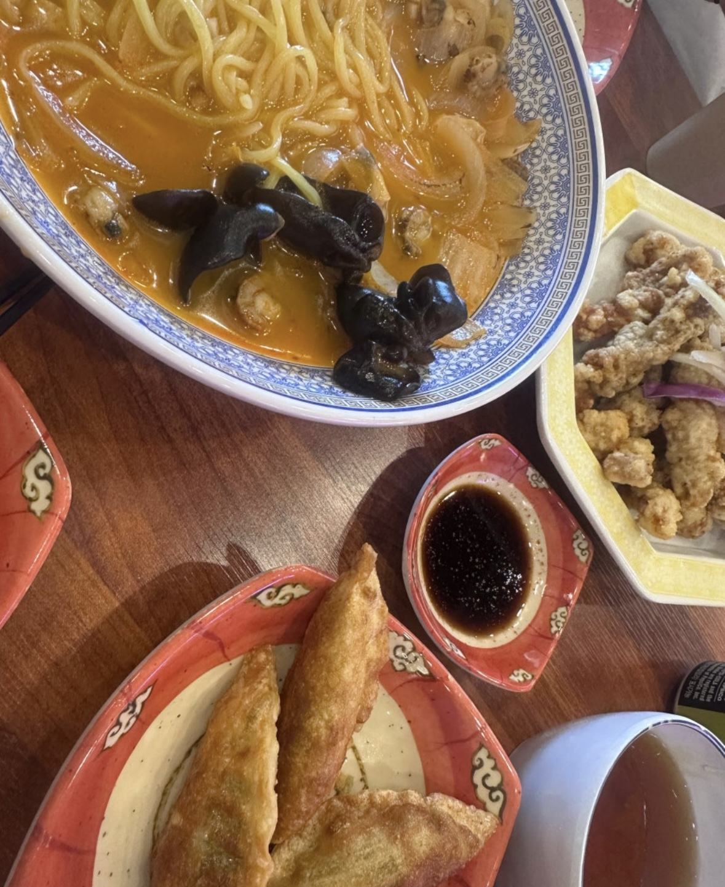

추천자: 이태희 · 위치: 경기 안산시 상록구 한양대학로 66
다양한 중식 메뉴를 푸짐하고 합리적인 가격에 제공하는 학교 앞 중식 맛집입니다.

가격: 10,000원
메뉴 설명:진하고 얼큰한 국물에 신선한 해산물과 아삭한 채소를 듬뿍 넣어 불향이 가득 살아있는 대표 메뉴입니다. 볶아낸 재료의 감칠맛과 탱글탱글한 면발이 잘 어울려 양도 푸짐하고, 매콤하고 개운한 식사를 원할 때 딱 좋습니다.